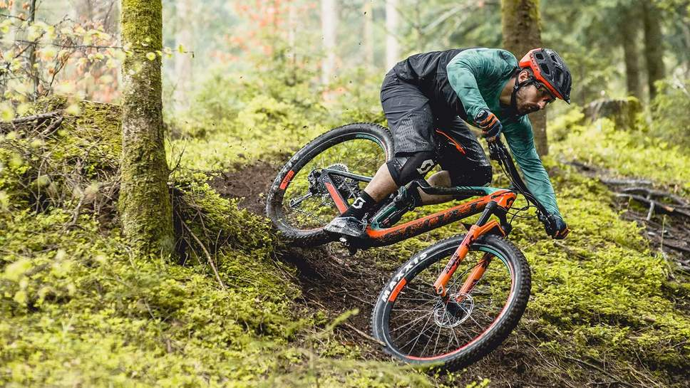
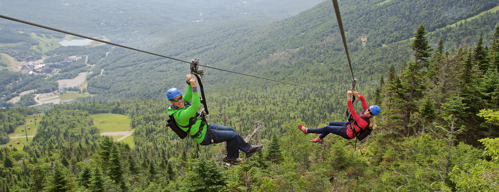
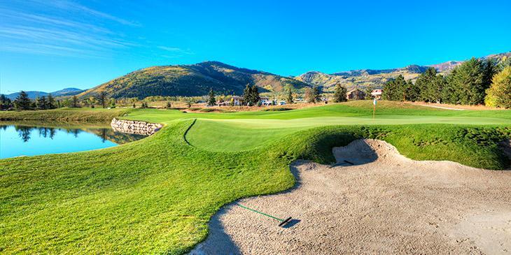
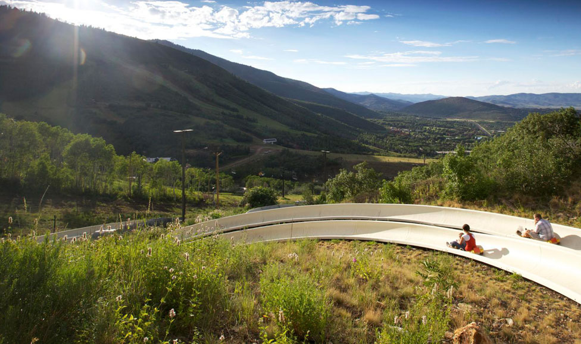
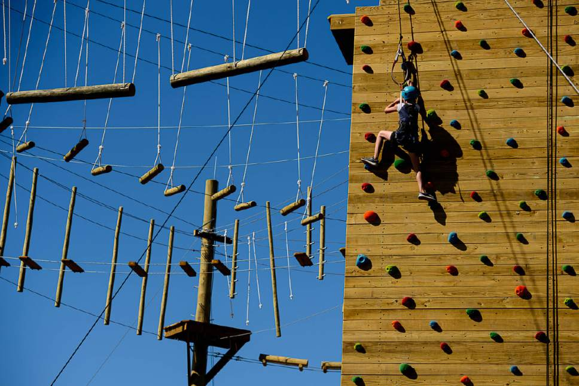

By JANS Mountain Recreation Experts Park City is full of mountain biking trails from expert to beginner, if you enjoy mountain biking, your in for a treat. Grab your bike and hit the trails within minutes! If its your first time and you want to give it a shot, head over to Coles Sport to rent a bike for the day. We hope you enjoy!
By park city mountain Resort One of Park Citys main attractions for you thrill seekers is the zipline located right in the park city mountain resort. Personally, this is my favorite thing todo in park City. If your ready to push the limits and have some fun, head to Park City Mountain Resort, grab some tickets and head up the mountain!
By Park City Golf Course Golf.. you love it or you hate it. For you golf lovers and addicts, the Park City Golf Course is unreal, it doesnt get much better then this. You can expect a pro rated course with beautiful scenery. We know you will have a fantasic time!
By park city mountain Resort Another fun activity todo in Park City Mountain Resort is the famous Alpine Slide. Have you ever wanted to speed without getting a ticket? Well here is your chance! You can speed down the mountain in a slide cart, throw your self into a turn and just have great times. Its over a half mile of turns, drops and pure adrenaline.
Are you up for a challange? Summit's Ropes Course is a great way to have fun and challange yourself. Enjoy a wide range of courses ranging from easier to hard. This is an activity that you will never forget! We hope you enjoy it!
